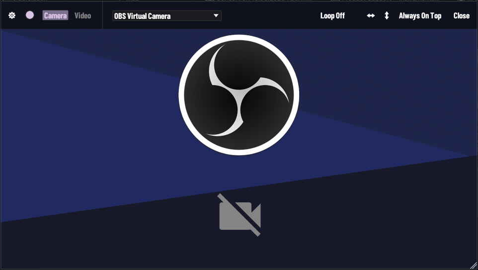
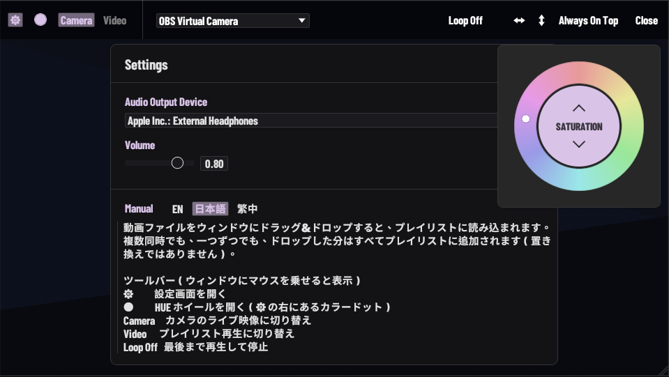
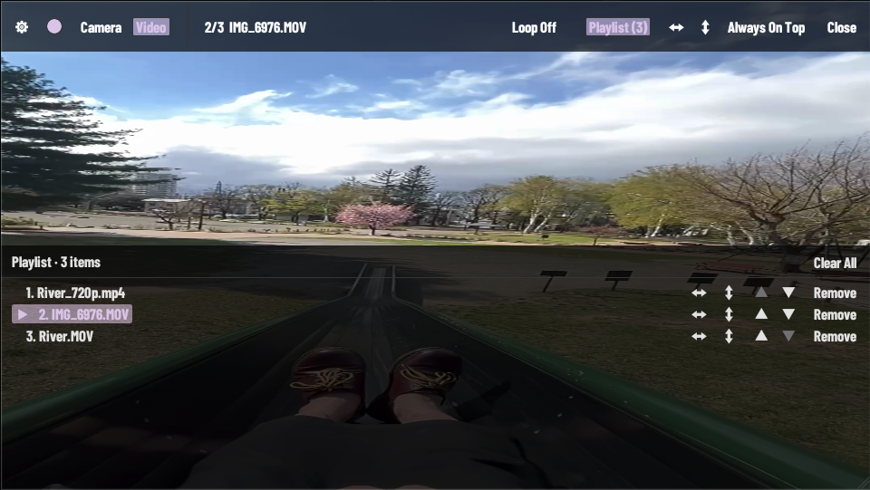

功能介紹
MADO 是 macOS 的無邊框影像／影片預覽工具。視窗沒有標題列與邊框，畫面就是內容本身，適合疊在其他軟體上方當參考影像、即時 webcam 監看或現場演出投影。
下載 — macOS (.dmg)


特色一覽
- 無邊框視窗：全畫面拖曳移動、雙擊全螢幕、右下角拖曳縮放、永遠置頂
- Webcam 即時影像來源（AVFoundation，可切換相機裝置）
- 拖曳影片檔載入，多檔累加為播放清單（不取代既有項目）
- 播放清單面板：排序、移除、每支獨立翻轉
- 三態循環：播完即停 / 單支循環 / 整個清單循環
- 左右／上下翻轉（UV 反向，每支影片獨立設定）
- 音訊輸出裝置選擇與音量（RtAudio 列舉所有 CoreAudio 輸出裝置）
- HUE 色相環：即時調整介面強調色，含 Coral / Mint / Sky / Violet 預設
- 鍵盤控制：全黑遮蓋、暫停／繼續、回到開頭
- 三語介面與說明書（EN / JP / TW）
技術資訊
- 開發語言
- Rust + egui/eframe + wgpu + ffmpeg-next + RtAudio + Python (AVFoundation camera service)
- 平台
- macOS (Apple Silicon / Intel), Windows
- 版本
- v0.2.1
System Requirements
- macOS
- macOS 13.0+
Apple Silicon (M1/M2/M3/M4) recommended, Intel Mac supported
USB / built-in camera for live preview - Windows
- Windows 10+